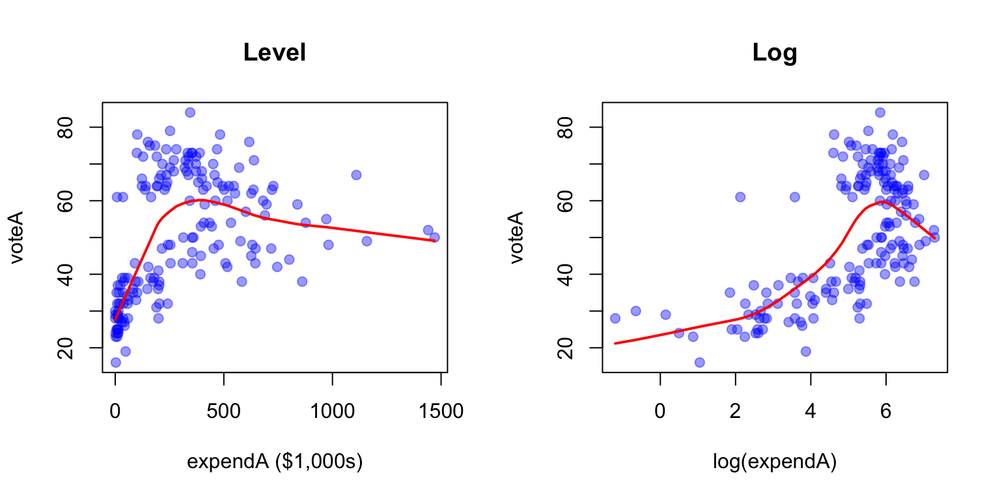
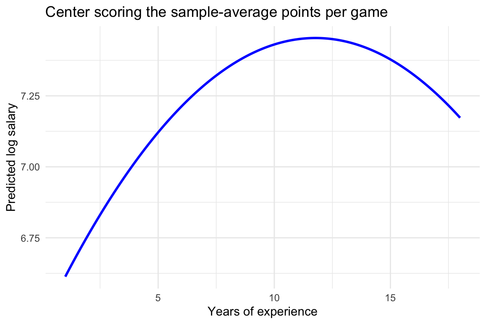

Call:
lm(formula = voteA ~ expendA + expendB + prtystrA, data = vote1)
Residuals:
Min 1Q Median 3Q Max
-26.661 -8.385 0.362 8.536 30.814
Coefficients:
Estimate Std. Error t value Pr(>|t|)
(Intercept) 33.267190 4.416784 7.532 2.87e-12 ***
expendA 0.034924 0.003369 10.365 < 2e-16 ***
expendB -0.034924 0.003001 -11.636 < 2e-16 ***
prtystrA 0.342514 0.087952 3.894 0.000142 ***
---
Signif. codes: 0 '***' 0.001 '**' 0.01 '*' 0.05 '.' 0.1 ' ' 1
Residual standard error: 11.12 on 169 degrees of freedom
Multiple R-squared: 0.5687, Adjusted R-squared: 0.561
F-statistic: 74.27 on 3 and 169 DF, p-value: < 2.2e-16
Econometrics PS 3 - Solution key
Question 1
Part (a)
Holding B’s spending and A’s party strength fixed, an extra $1,000 of spending by A is associated with a 0.035 percentage point higher vote share for A on average. The coefficient is statistically significant at the 1% level (t = 10.4).
Holding both candidates’ spending fixed, a district where A’s party got one percentage point more of the last presidential vote gives A a 0.343 percentage point higher vote share on average. This is also significant at the 1% level (t = 3.9).
Part (b)
Predictions. Dividing a regressor by 1,000 multiplies its coefficient and its standard error by 1,000. The intercept, the coefficient on prtystrA and their standard errors do not change. The fitted values and residuals are identical, so the R^2 does not change either.
vote1$expendA_mil <- vote1$expendA / 1000
vote1$expendB_mil <- vote1$expendB / 1000
m_mil <- lm(voteA ~ expendA_mil + expendB_mil + prtystrA, data = vote1)
stargazer(m_level, m_mil, type = "text",
column.labels = c("$1,000s", "$ millions"),
keep.stat = c("n", "rsq"))
=========================================
Dependent variable:
----------------------------
voteA
1,000s millions
(1) (2)
-----------------------------------------
expendA 0.035***
(0.003)
expendB -0.035***
(0.003)
expendA_mil 34.924***
(3.369)
expendB_mil -34.924***
(3.001)
prtystrA 0.343*** 0.343***
(0.088) (0.088)
Constant 33.267*** 33.267***
(4.417) (4.417)
-----------------------------------------
Observations 173 173
R2 0.569 0.569
=========================================
Note: *p<0.1; **p<0.05; ***p<0.01The predictions are confirmed. An extra $1 million of spending by A is associated with a 34.9 percentage point higher vote share.
If voteA were measured as a share between 0 and 1 (i.e. divided by 100), every coefficient, including the intercept, and every standard error would be divided by 100. The R^2 would again be unchanged.
Part (c)
Call:
lm(formula = voteA ~ log(expendA) + log(expendB) + prtystrA,
data = vote1)
Residuals:
Min 1Q Median 3Q Max
-20.3968 -5.4174 -0.8679 4.9551 26.0660
Coefficients:
Estimate Std. Error t value Pr(>|t|)
(Intercept) 45.07893 3.92631 11.48 <2e-16 ***
log(expendA) 6.08332 0.38215 15.92 <2e-16 ***
log(expendB) -6.61542 0.37882 -17.46 <2e-16 ***
prtystrA 0.15196 0.06202 2.45 0.0153 *
---
Signif. codes: 0 '***' 0.001 '**' 0.01 '*' 0.05 '.' 0.1 ' ' 1
Residual standard error: 7.712 on 169 degrees of freedom
Multiple R-squared: 0.7926, Adjusted R-squared: 0.7889
F-statistic: 215.2 on 3 and 169 DF, p-value: < 2.2e-16In a level-log model, \Delta voteA \approx (\beta_1/100)\,\%\Delta expendA. Holding B’s spending and party strength fixed, a 1% increase in A’s spending is associated with a 0.061 percentage point higher vote share for A. The coefficient is significant at the 1% level (t = 15.9).
For a 10% increase, the approximation gives \hat{\beta}_1/10 = 0.61 percentage points.
Part (d)
data.frame(model = c("Level (a)", "Level-log (c)"),
n = c(nobs(m_level), nobs(m_log)),
r_squared = round(c(summary(m_level)$r.squared, summary(m_log)$r.squared), 3)) model n r_squared
1 Level (a) 173 0.569
2 Level-log (c) 173 0.793The comparison is legitimate here. Both models have the same dependent variable (voteA in levels), the same sample, and the same number of regressors. So R^2 measures the share of the same variation in voteA that each model explains. The level-log model explains a lot more: 0.79 versus 0.57.
par(mfrow = c(1, 2))
plot(vote1$expendA, vote1$voteA, pch = 19, col = rgb(0, 0, 1, 0.4),
xlab = "expendA ($1,000s)", ylab = "voteA", main = "Level")
lines(lowess(vote1$expendA, vote1$voteA), col = "red", lwd = 2)
plot(log(vote1$expendA), vote1$voteA, pch = 19, col = rgb(0, 0, 1, 0.4),
xlab = "log(expendA)", ylab = "voteA", main = "Log")
lines(lowess(log(vote1$expendA), vote1$voteA), col = "red", lwd = 2)
In levels, most races are bunched at low spending and the relationship is clearly concave: vote share rises steeply with the first few hundred thousand dollars and then flattens out. A straight line fits this poorly. Against log(expendA) the relationship is close to linear, so the level-log specification fits much better.
This makes economic sense because spending has diminishing returns. The first $100,000 buys name recognition and basic advertising, while an extra $100,000 for a candidate already spending $1 million adds little. The log specification says that the same percentage increase in spending moves the vote share by the same amount, which builds those diminishing returns in.
Question 2
Part (a)
m_std <- lm(scale(voteA) ~ scale(expendA) + scale(expendB) + scale(prtystrA), data = vote1)
summary(m_std)
Call:
lm(formula = scale(voteA) ~ scale(expendA) + scale(expendB) +
scale(prtystrA), data = vote1)
Residuals:
Min 1Q Median 3Q Max
-1.58842 -0.49957 0.02157 0.50858 1.83584
Coefficients:
Estimate Std. Error t value Pr(>|t|)
(Intercept) 3.330e-16 5.037e-02 0.000 1.000000
scale(expendA) 5.847e-01 5.641e-02 10.365 < 2e-16 ***
scale(expendB) -6.373e-01 5.476e-02 -11.636 < 2e-16 ***
scale(prtystrA) 2.037e-01 5.231e-02 3.894 0.000142 ***
---
Signif. codes: 0 '***' 0.001 '**' 0.01 '*' 0.05 '.' 0.1 ' ' 1
Residual standard error: 0.6626 on 169 degrees of freedom
Multiple R-squared: 0.5687, Adjusted R-squared: 0.561
F-statistic: 74.27 on 3 and 169 DF, p-value: < 2.2e-16Holding B’s spending and party strength fixed, a one standard deviation increase in A’s spending (about $281,000) is associated with a 0.58 standard deviation higher vote share for A. It is significant at the 1% level (t = 10.4).
Part (b)
b_prty <- coef(m_level)["prtystrA"]
s_x <- sd(vote1$prtystrA)
s_y <- sd(vote1$voteA)
c(raw = unname(b_prty), s_x = s_x, s_y = s_y,
by_hand = unname(b_prty * s_x / s_y),
from_scale = unname(coef(m_std)["scale(prtystrA)"])) raw s_x s_y by_hand from_scale
0.3425140 9.9836504 16.7847606 0.2037289 0.2037289 \hat{\beta}^*_{prtystrA} = 0.3425 \times 9.984 / 16.785 = 0.2037, matching the coefficient from the scale() regression.
Part (c)
The raw coefficient on prtystrA (0.343) is about ten times the one on expendA (0.035). But the standardized coefficients reverse this ranking. A one SD increase in A’s spending is associated with a 0.58 SD higher vote share, compared with only 0.2 SD for a one SD increase in party strength. A’s spending has the larger association.
The raw coefficients are misleading because they are in different units. One unit of expendA is $1,000, a tiny change compared with its SD of about $281,000. One unit of prtystrA is a percentage point, which is a sizeable fraction of its SD of about 10 points. Comparing “one unit” across variables compares changes of very different sizes. Standardizing puts both on the same scale: a typical (one SD) change in each.
Question 3
Part (a)
data(nbasal)
m_nba <- lm(lwage ~ points + exper + expersq + guard + forward, data = nbasal)
summary(m_nba)
Call:
lm(formula = lwage ~ points + exper + expersq + guard + forward,
data = nbasal)
Residuals:
Min 1Q Median 3Q Max
-2.0823 -0.3096 0.1078 0.4404 1.5852
Coefficients:
Estimate Std. Error t value Pr(>|t|)
(Intercept) 5.604324 0.134725 41.598 < 2e-16 ***
points 0.082822 0.006827 12.131 < 2e-16 ***
exper 0.170496 0.037479 4.549 8.23e-06 ***
expersq -0.007241 0.002715 -2.667 0.00813 **
guard -0.234464 0.112091 -2.092 0.03742 *
forward 0.002932 0.111680 0.026 0.97907
---
Signif. codes: 0 '***' 0.001 '**' 0.01 '*' 0.05 '.' 0.1 ' ' 1
Residual standard error: 0.6288 on 263 degrees of freedom
Multiple R-squared: 0.5005, Adjusted R-squared: 0.491
F-statistic: 52.71 on 5 and 263 DF, p-value: < 2.2e-16Holding experience and position fixed, one more point per game is associated with roughly 8.3% higher salary on average. The coefficient is significant at the 1% level (t = 12.1).
Part (b)
\frac{\partial \log(wage)}{\partial exper} = \beta_2 + 2\beta_3\, exper
b <- coef(m_nba)
exper_vals <- c(2, 5, 10)
data.frame(exper = exper_vals,
effect = round(b["exper"] + 2 * b["expersq"] * exper_vals, 4),
pct = round(100 * (b["exper"] + 2 * b["expersq"] * exper_vals), 1)) exper effect pct
1 2 0.1415 14.2
2 5 0.0981 9.8
3 10 0.0257 2.6Holding points and position fixed, one more year of experience is associated with about 14.2% higher salary for a player with 2 years of experience, 9.8% at 5 years and only 2.6% at 10 years. The effect is decreasing in experience, because \hat{\beta}_3 < 0.
Part (c)
Predicted log salary peaks where the marginal effect equals zero: exper^* = -\hat{\beta}_2 / (2\hat{\beta}_3).
turn <- -b["exper"] / (2 * b["expersq"])
c(turning_point = unname(turn),
n_above = sum(nbasal$exper > turn),
max_exper = max(nbasal$exper))turning_point n_above max_exper
11.77278 11.00000 18.00000 Predicted log salary peaks at about 11.8 years. Only 11 of the 269 players have more experience than that.
This does not show that the most experienced players earn less than they did a few years earlier:
- The downward part of the curve is estimated from only 11 players. The quadratic is symmetric around its peak by construction, so the fit for the bulk of the sample (1 to 10 years) determines where the downturn occurs. The decline is mostly an artifact of the functional form.
- This is a cross-section, not a panel: we compare different players with different experience levels, not the same player over time.
- Holding
pointsfixed, a 15-year veteran with the same scoring as a 5-year player may simply be past their prime in other dimensions. And the players who survive that long are a selected group.
Part (d)
pred_data <- data.frame(exper = seq(min(nbasal$exper), max(nbasal$exper), by = 0.1),
points = mean(nbasal$points),
guard = 0, forward = 0)
pred_data$expersq <- pred_data$exper^2
pred_data$lwage_hat <- predict(m_nba, newdata = pred_data)
ggplot(pred_data, aes(x = exper, y = lwage_hat)) +
geom_line(color = "blue", linewidth = 1) +
labs(x = "Years of experience", y = "Predicted log salary",
title = "Center scoring the sample-average points per game") +
theme_minimal()
Question 4
Part (a)
The base group is centers, the position dummy left out of the regression.
m_all <- lm(lwage ~ points + exper + expersq + guard + forward + center, data = nbasal)
summary(m_all)
Call:
lm(formula = lwage ~ points + exper + expersq + guard + forward +
center, data = nbasal)
Residuals:
Min 1Q Median 3Q Max
-2.0823 -0.3096 0.1078 0.4404 1.5852
Coefficients: (1 not defined because of singularities)
Estimate Std. Error t value Pr(>|t|)
(Intercept) 5.604324 0.134725 41.598 < 2e-16 ***
points 0.082822 0.006827 12.131 < 2e-16 ***
exper 0.170496 0.037479 4.549 8.23e-06 ***
expersq -0.007241 0.002715 -2.667 0.00813 **
guard -0.234464 0.112091 -2.092 0.03742 *
forward 0.002932 0.111680 0.026 0.97907
center NA NA NA NA
---
Signif. codes: 0 '***' 0.001 '**' 0.01 '*' 0.05 '.' 0.1 ' ' 1
Residual standard error: 0.6288 on 263 degrees of freedom
Multiple R-squared: 0.5005, Adjusted R-squared: 0.491
F-statistic: 52.71 on 5 and 263 DF, p-value: < 2.2e-16Each player plays exactly one position, so guard + forward + center = 1 for every observation. This is an exact linear combination of the intercept, so including all three dummies with an intercept is perfect multicollinearity (the dummy variable trap). OLS cannot separate their effects. R detects this and drops the last collinear variable, center (its coefficient is reported as NA, “not defined because of singularities”), so we get back the regression from Question 3(a).
Part (b)
Holding points and experience fixed:
- Guards earn about 23.4% less than centers by the approximation. The exact difference is 100(e^{-0.2345} - 1) = -20.9\%. The difference is significant at the 5% level (t = -2.09).
- Forwards earn about 0.3% more than centers (exactly 0.3%). This is essentially zero and not statistically significant (t = 0.03).
Part (c)
m_guardbase <- lm(lwage ~ points + exper + expersq + forward + center, data = nbasal)
stargazer(m_nba, m_guardbase, type = "text",
column.labels = c("Base: center", "Base: guard"),
keep.stat = c("n", "rsq"))
=========================================
Dependent variable:
----------------------------
lwage
Base: center Base: guard
(1) (2)
-----------------------------------------
points 0.083*** 0.083***
(0.007) (0.007)
exper 0.170*** 0.170***
(0.037) (0.037)
expersq -0.007*** -0.007***
(0.003) (0.003)
guard -0.234**
(0.112)
forward 0.003 0.237***
(0.112) (0.084)
center 0.234**
(0.112)
Constant 5.604*** 5.370***
(0.135) (0.123)
-----------------------------------------
Observations 269 269
R2 0.501 0.501
=========================================
Note: *p<0.1; **p<0.05; ***p<0.01Unchanged: the coefficients and standard errors on points, exper and expersq, and the R^2. Changing the base group is just a reparameterization: the fitted values are identical.
Changed: the intercept (now the intercept for guards) and the position coefficients, since they are now measured relative to guards.
Forward minus guard is the same in both:
Part (d)
m_marr <- lm(lwage ~ points + exper + expersq + guard + forward + marr + black + marrblck,
data = nbasal)
summary(m_marr)
Call:
lm(formula = lwage ~ points + exper + expersq + guard + forward +
marr + black + marrblck, data = nbasal)
Residuals:
Min 1Q Median 3Q Max
-2.05573 -0.33434 0.08919 0.41872 1.79787
Coefficients:
Estimate Std. Error t value Pr(>|t|)
(Intercept) 5.424849 0.166768 32.529 < 2e-16 ***
points 0.081747 0.006858 11.920 < 2e-16 ***
exper 0.172755 0.037990 4.547 8.33e-06 ***
expersq -0.007394 0.002718 -2.720 0.00696 **
guard -0.261012 0.113590 -2.298 0.02237 *
forward -0.031450 0.113566 -0.277 0.78205
marr 0.152260 0.180767 0.842 0.40039
black 0.271064 0.142651 1.900 0.05851 .
marrblck -0.225179 0.196147 -1.148 0.25202
---
Signif. codes: 0 '***' 0.001 '**' 0.01 '*' 0.05 '.' 0.1 ' ' 1
Residual standard error: 0.6276 on 260 degrees of freedom
Multiple R-squared: 0.5081, Adjusted R-squared: 0.493
F-statistic: 33.57 on 8 and 260 DF, p-value: < 2.2e-16d <- coef(m_marr)
data.frame(group = c("Unmarried non-black (base)", "Married non-black",
"Unmarried black", "Married black"),
formula = c("0", "b_marr", "b_black", "b_marr + b_black + b_marrblck"),
diff_log_salary = round(c(0, d["marr"], d["black"],
d["marr"] + d["black"] + d["marrblck"]), 3)) group formula diff_log_salary
1 Unmarried non-black (base) 0 0.000
2 Married non-black b_marr 0.152
3 Unmarried black b_black 0.271
4 Married black b_marr + b_black + b_marrblck 0.198Relative to unmarried non-black players with the same points, experience and position:
- Married non-black players earn about 15.2% more (\hat{\beta}_{marr}). This is not statistically significant (t = 0.84).
- Unmarried black players earn about 27.1% more (\hat{\beta}_{black}). This is significant only at the 10% level (t = 1.9).
- Married black players earn about 19.8% more (\hat{\beta}_{marr} + \hat{\beta}_{black} + \hat{\beta}_{marrblck}).
The coefficient on marrblck measures how much the marriage premium differs for black players compared with non-black players. Equivalently, it is how much the black–non-black gap differs between married and unmarried players.
Question 5
Part (a)
data(attend)
m_att <- lm(stndfnl ~ atndrte + priGPA + I(priGPA^2) + atndrte:priGPA, data = attend)
summary(m_att)
Call:
lm(formula = stndfnl ~ atndrte + priGPA + I(priGPA^2) + atndrte:priGPA,
data = attend)
Residuals:
Min 1Q Median 3Q Max
-3.4527 -0.5662 -0.0375 0.6319 2.4342
Coefficients:
Estimate Std. Error t value Pr(>|t|)
(Intercept) 2.011844 0.802862 2.506 0.0125 *
atndrte -0.009835 0.010540 -0.933 0.3511
priGPA -2.002773 0.494606 -4.049 5.73e-05 ***
I(priGPA^2) 0.433779 0.102354 4.238 2.57e-05 ***
atndrte:priGPA 0.004509 0.004454 1.012 0.3117
---
Signif. codes: 0 '***' 0.001 '**' 0.01 '*' 0.05 '.' 0.1 ' ' 1
Residual standard error: 0.9035 on 675 degrees of freedom
Multiple R-squared: 0.1712, Adjusted R-squared: 0.1663
F-statistic: 34.85 on 4 and 675 DF, p-value: < 2.2e-16Part (b)
\frac{\partial E(stndfnl \mid \cdot)}{\partial\, atndrte} = \beta_1 + \beta_4\, priGPA
\hat{\beta}_1 on its own is the effect of attendance for a student with priGPA = 0. No such student exists (the lowest prior GPA in the sample is 0.857), so \hat{\beta}_1 by itself has no useful interpretation. That it is negative (-0.0098) does not mean attendance lowers exam scores. With an interaction, the effect of attendance has to be evaluated at a meaningful value of priGPA.
Part (c)
g <- coef(m_att)
gpa_bar <- mean(attend$priGPA)
att_effect <- function(gpa) unname(g["atndrte"] + g["atndrte:priGPA"] * gpa)
att_effect(gpa_bar)[1] 0.001830448At the average prior GPA (2.59), one more percentage point of attendance is associated with a 0.0018 SD higher final exam score. A student who attends 10 percentage points more of the classes is predicted to score about 0.018 standard deviations higher.
Part (d)
data.frame(priGPA = c(2, 3.5), effect = round(c(att_effect(2), att_effect(3.5)), 4)) priGPA effect
1 2.0 -0.0008
2 3.5 0.0059The estimated effect of attendance is essentially zero for a student with a 2.0 prior GPA (-0.0008 SD per percentage point). For a student with a 3.5 prior GPA it is 0.0059 SD per percentage point, so 10 more points of attendance would mean about 0.06 SD. The positive interaction says that students with higher prior GPAs benefit more from attending class.
Question 6
Part (a)
Students who choose to use tutoring are likely to differ systematically in prior academic ability. Weaker students may seek help more, or more motivated students may be more likely to use the free resource. Prior GPA also strongly predicts the final grade. Leaving it out would therefore bias \hat{\beta}_1 (omitted variable bias). Crucially, priorGPA is measured before the semester, so it cannot be affected by tutoring: it is a confounder, not an outcome of the program.
Part (b)
\hat{\beta}_1 should be larger in Model A. Tutoring raises grades through two channels: directly (better understanding of the material) and indirectly, by increasing study hours, which in turn raise grades. Model A leaves study hours out, so \hat{\beta}_1 picks up both channels. In Model B, study hours are held fixed, which shuts down the indirect channel. That leaves only the direct effect.
Part (c)
In Model B, \beta_1 measures the effect of tutoring on grades holding study hours fixed: the part of the program’s effect that does not work through extra studying. It compares tutored and non-tutored students who study the same number of hours.
To estimate the effect of the tutoring program on grades, use Model A. Study hours are a mediator: they are an outcome of the program, measured during the semester. Controlling for them “controls away” part of the very effect we want to measure. This is the over-controlling (bad control) problem from class. The college cares about the total effect of offering tutoring, including the fact that it gets students to study more.